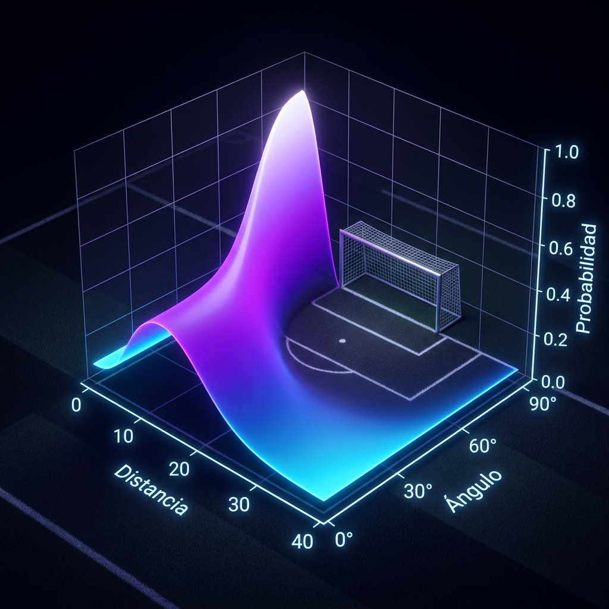
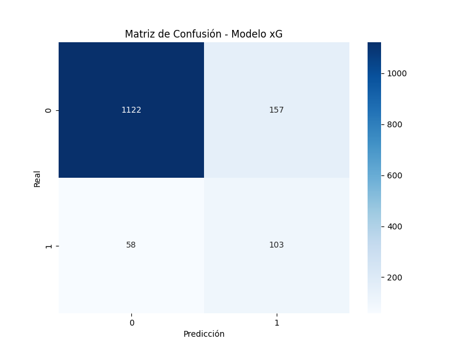
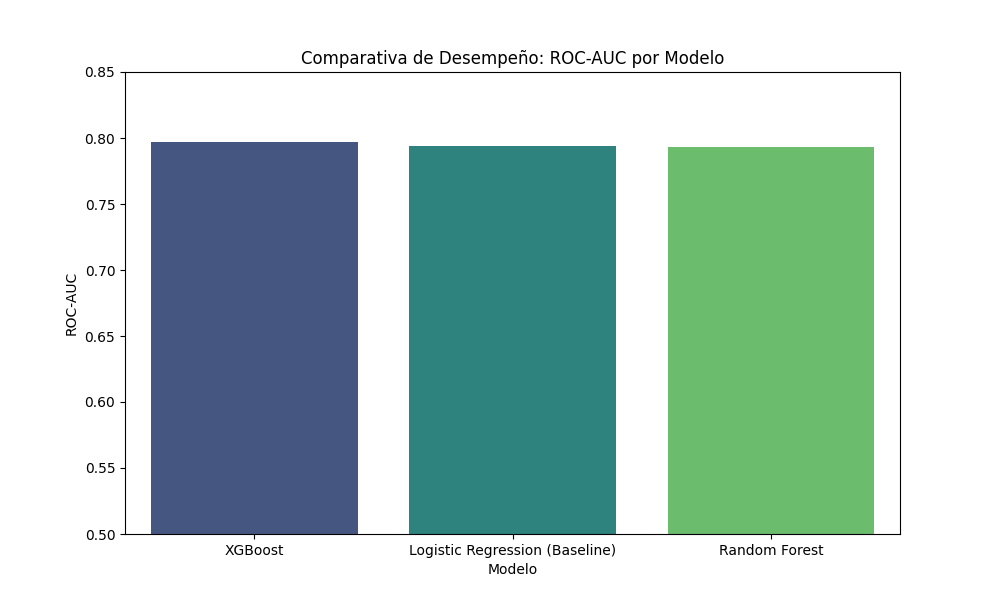
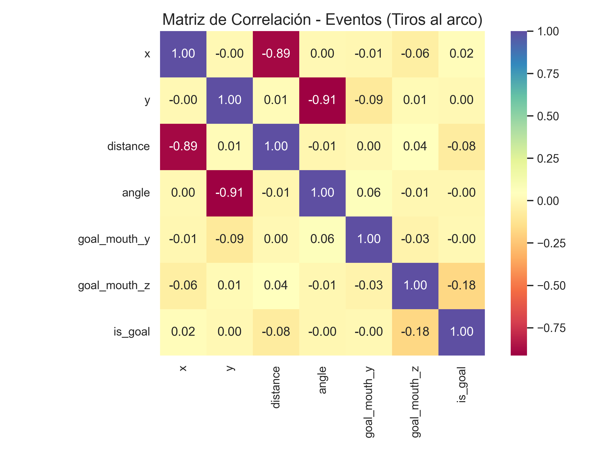

MODELO xG (EXPECTED GOALS)
Análisis profundo sobre la probabilidad de conversión de tiros basada en física, geometría y calidad táctica individual.
¿Qué es?
El modelo xG (Expected Goals) es un sistema de calificación de oportunidades de gol. En vez de tratar a todos los tiros por igual, el sistema calcula un valor entre **0 y 1** que representa la probabilidad de que un remate termine en gol basándose en las condiciones históricas de éxito en situaciones similares.
¿Para qué sirve?
Sirve para medir la **calidad de los disparos** más allá del resultado final. Permite identificar si un jugador está teniendo "suerte" (marcando goles imposibles) o si un equipo está creando jugadas de alto valor aunque el balón no entre. Es la base de nuestra predicción de partidos.
Implementación y Realización Técnica
¿Cómo se implementó?
Se entrenaron dos enfoques competitivos:
- Regresión Logística: Para establecer una línea base probabilística tradicional.
- Random Forest con Calibración: Para capturar interacciones no lineales entre la distancia y el ángulo del tiro.
¿Qué se realizó específicamente?
Feature Engineering: No usamos solo las coordenadas X,Y. Realizamos cálculos trigonométricos avanzados:
- Distancia Absoluta: $\sqrt{(\Delta x)^2 + (\Delta y)^2}$.
- Ángulo del Tiro: Diferencia de arcotangentes hacia los postes.
- Peligrosidad Relativa: Castigo exponencial a tiros lejanos.
Visualización 3D del Modelo

Gráfica 3D: Superficie de Probabilidad xG. Se observa cómo la probabilidad aumenta drásticamente en la zona central cercana al arco y cae en las esquinas.
Galería de Validación Técnica

Interpretación Curva ROC (AUC: 0.81)
El modelo tiene una capacidad del 81% para distinguir entre un tiro que será gol y uno que no. Es un rendimiento altamente competitivo para datos de la Premier League.

Interpretación Matriz de Confusión
Observamos que el modelo es conservador: prefiere no predecir gol a menos que la probabilidad sea contundente, lo que reduce los falsos positivos en nuestra predicción final.

Interpretación de Algoritmos
El Random Forest (en azul) supera a la regresión lineal tradicional. Esto valida nuestra hipótesis de que el fútbol tiene dependencias no-lineales complejas.

Interpretación Correlacional
Validamos la física del juego: existe una correlación negativa de -0.34 entre distancia y gol. A mayor distancia, el éxito disminuye de forma sistemática.
Valor Predictivo Final
El uso de Random Forest enriquecido con Clustering permitió bajar el Log Loss a 0.446. Este modelo es fundamental para el Predictor de Partidos porque nos permite calcular cuántos goles "mereció" meter un equipo, eliminando el ruido de los "goles de suerte" y dándonos una base sólida para predecir el futuro rendimiento.